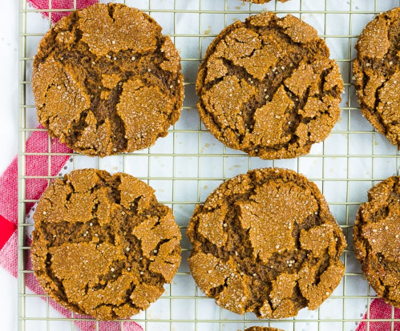

ginger molasses cookies

INGREDIENTS
- 1 cup vegan butter, softened to room temperature
- 1 1/2 cups packed brown sugar
- 1/2 cup molasses
- 1 tablespoon vanilla extract
- 3 1/4 cups all purpose flour
- 1 tablespoon baking soda
- 1/2 teaspoon salt
- 1 tablespoon ground ginger
- 1 tablespoon cinnamon
- 1/2 teaspoon nutmeg
- 1 cup sugar, for rolling
- Preheat the oven to 350 degrees F. Line 2 large baking sheets with parchment paper.
- In a large bowl with a hand mixer, beat the softened vegan butter and brown sugar together until creamy. Add the molasses and vanilla, and beat in until smooth. Scrape the sides as needed with a spatula.
- Add 2 cups of flour to the bowl, then sprinkle the baking soda, salt, ginger, cinnamon and nutmeg on top of the flour. Mix on low speed to combine. Now add the remaining 1 1/4 cups flour and mix until incorporated. The dough will be quite thick, but not dry.
- Fill a small bowl with the cup of sugar for rolling.
- Scoop out about 2 tablespoons of dough for large cookies (1 tablespoon for small cookies), roll into a ball, then roll each ball in the sugar until completely coated.
- Place on the prepared baking sheets, and bake for 11-12 minutes, until they begin to crack on top. They will look very soft, but they firm up a lot as they cool. If you over bake, they will be crispy.
- Let cool for 10-15 minutes, then enjoy!
home